王大谋 · 7 级三选一，11 级精通
王大谋 · 7 级三选一，11 级精通大哥借我
3 AP／12 疲劳／冷却 3 轮
持盾与一名相邻可行动队员互护，双方近防+5，至各自下次回合开始。临时护卫近防取最高，不相加。
11 级：基础疲劳消耗由 12 降至 11，行动点、冷却与次数不变。
33 名现行伙伴 · 99 项技能 · 7 级三选一，11 级精通。阿飞使用独立转职技能。
王大谋 · 7 级三选一，11 级精通3 AP／12 疲劳／冷却 3 轮
持盾与一名相邻可行动队员互护，双方近防+5，至各自下次回合开始。临时护卫近防取最高，不相加。
11 级：基础疲劳消耗由 12 降至 11，行动点、冷却与次数不变。
 王大谋 · 7 级三选一，11 级精通
王大谋 · 7 级三选一，11 级精通被动，按条件生效
持盾且2格内至少两名其他可行动队员：自身决心+8、近战破甲+10%。队友离开立即失效，不按人数叠乘。
11 级：自身每回合疲劳恢复额外 +1。
被动，按条件生效
本人在册且存活时，已解锁主题人物的服务费八折，最多省200克朗，每7日一次。装备与补级费不打折；仅成功雇佣消费机会；不能改变解锁与候选冷却。
11 级：自身每回合疲劳恢复额外 +1。
 午夜抹抹茶 · 7 级三选一，11 级精通
午夜抹抹茶 · 7 级三选一，11 级精通被动，按条件生效
本人在册且存活时，原版维修每实际消耗7工具返1，每日最多3。只记录外部维修支出，返还不再作为消耗；不按预备队人数复制。
11 级：自身每回合疲劳恢复额外 +1。
 午夜抹抹茶 · 7 级三选一，11 级精通
午夜抹抹茶 · 7 级三选一，11 级精通2 AP／8 疲劳／冷却 2 轮
标记一个可见敌人，下一次己方单体武器攻击命中+10，尝试后耗尽，两次施术者回合开始后到期。一人仅一个标记；与全部Mod命中加成合计≤10。
11 级：基础疲劳消耗由 8 降至 7，行动点、冷却与次数不变。
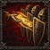
午夜抹抹茶 · 7 级三选一，11 级精通2 AP／8 疲劳／冷却 2 轮
一名其他队员的下一次单体武器攻击少耗8疲劳，两次目标回合结束后到期；最低仍耗原消耗的50%向上取整。减耗取最高，优惠不返还AP。
11 级：基础疲劳消耗由 8 降至 7，行动点、冷却与次数不变。
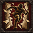
小酒瓶 · 7 级三选一，11 级精通4 AP／18 疲劳／冷却 2 轮
以单手近战武器的普通单体招式攻击，命中 +10；攻击后近战防御 -5，直到自己下次回合开始。命中或落空都会进入冷却。
11 级：基础疲劳消耗由 18 降至 16，行动点、冷却与次数不变。
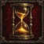
小酒瓶 · 7 级三选一，11 级精通被动，按条件生效
从第 5 轮起，近战武器攻击伤害 +10%，每次近战武器技能额外消耗 3 疲劳。
11 级：自身每回合疲劳恢复额外 +1。
 小酒瓶 · 7 级三选一，11 级精通
小酒瓶 · 7 级三选一，11 级精通被动，按条件生效
每轮首次攻击本轮已被其他队员单体武器命中的敌人时，命中 +5；尝试后消耗，不适用于范围攻击。
11 级：自身每回合疲劳恢复额外 +1。
4 AP／20 疲劳／冷却 3 轮
指定自己或2格内队员为中心，选择最多3名2格内可行动己方角色（可含自身）：下次回合开始恢复6疲劳，决心+5至该回合结束。禁止扩大到12人，援军不追补。
11 级：基础疲劳消耗由 20 降至 17，行动点、冷却与次数不变。
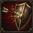
白小帅子 · 7 级三选一，11 级精通被动，按条件生效
2 格内没有可行动队员时决心 -8；持盾且与队员相邻时，被攻击时近防 +4。
11 级：自身每回合疲劳恢复额外 +1。
 白小帅子 · 7 级三选一，11 级精通
白小帅子 · 7 级三选一，11 级精通3 AP／12 疲劳／冷却 2 轮
必须持盾，近防+6、免疫推拉，到自己下次回合开始；禁止主动移动。眩晕、网缚、伤害照常；失盾或被强制移动立即终止。
11 级：基础疲劳消耗由 12 降至 11，行动点、冷却与次数不变。
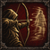
李李超欧 · 7 级三选一，11 级精通3 AP／16 疲劳／冷却 3 轮，每战至多 2 次
无相邻敌人才可用：自身远防+20，至下次回合开始。主动攻击或移动即解除。敌人仍能选中且范围攻击照常。每战最多2次。
11 级：基础疲劳消耗由 16 降至 14，行动点、冷却与次数不变。
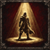
李李超欧 · 7 级三选一，11 级精通被动，按条件生效
单体远程武器每轮首次命中+1聚光、首次落空-1，最多2层；每层远攻+3、决心+3。战后清零，计入Mod命中+10总上限。
11 级：自身每回合疲劳恢复额外 +1。
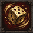
李李超欧 · 7 级三选一，11 级精通被动，按条件生效
士气检定失败时获得至少25%的原版重掷机会，与其他重掷来源取高。不重掷命中、伤害、招募或掉落；不是免疫恐惧。
11 级：自身每回合疲劳恢复额外 +1。
被动，按条件生效
本人在册存活时，每日首笔城镇食物购买优惠15%，最多省30克朗；取消/失败不消耗。不能靠拆单多次获得，出售无加成。
11 级：自身每回合疲劳恢复额外 +1。
 小月牙 · 7 级三选一，11 级精通
小月牙 · 7 级三选一，11 级精通被动，按条件生效
单体远程武器切换到与上次不同的敌人时命中+6，每轮一次。首次射击不触发；落空也更新目标。计入全Mod+10总上限。
11 级：自身每回合疲劳恢复额外 +1。
 小月牙 · 7 级三选一，11 级精通
小月牙 · 7 级三选一，11 级精通被动，按条件生效
每战一次，自己回合开始时若处于动摇/崩溃，恢复一级士气并消除4疲劳。不能解除逃跑、魅惑、眩晕；不升到自信。
11 级：自身每回合疲劳恢复额外 +1。
 余初九 · 7 级三选一，11 级精通
余初九 · 7 级三选一，11 级精通3 AP／12 疲劳／冷却 2 轮
干扰 3 格内可见的人类或绿皮，使其近战命中 -8，直到目标下次回合结束。不影响亡灵、野兽及免疫恐惧的敌人。同名效果不叠加。
11 级：基础疲劳消耗由 12 降至 11，行动点、冷却与次数不变。
被动，按条件生效
与可行动的阿飞相距不超过 2 格时，决心 +10。阿飞未出战或失去行动能力时，依次由王大谋、午夜抹抹茶代任。
11 级：自身每回合疲劳恢复额外 +1。
 余初九 · 7 级三选一，11 级精通
余初九 · 7 级三选一，11 级精通3 AP／20 疲劳／冷却 3 轮，每战至多 2 次
与相邻同高、可行动己方队员交换位置，免脱离攻击；双方都不能处于网缚、眩晕、不可移动或换位免疫。每战最多2次，移动本身不赠送攻击。
11 级：基础疲劳消耗由 20 降至 17，行动点、冷却与次数不变。
 小鱼贝壳 · 7 级三选一，11 级精通
小鱼贝壳 · 7 级三选一，11 级精通2 AP／0 疲劳／每战一次，每战至多 1 次
每战一次，立即消除 15 点累积疲劳；随后两次自己回合开始时，疲劳恢复量各减少 5。疲劳为零时不能使用。此技能不回复生命。
11 级：立即恢复疲劳由 15 增至 18。
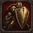
小鱼贝壳 · 7 级三选一，11 级精通被动，按条件生效
至少一名未持盾的可行动己方队员与自己相邻时，受攻击时近防+5。人数不叠加；与其他Mod常驻条件近防共享+6上限。
11 级：自身每回合疲劳恢复额外 +1。
 小鱼贝壳 · 7 级三选一，11 级精通
小鱼贝壳 · 7 级三选一，11 级精通4 AP／18 疲劳／冷却 3 轮，每战至多 2 次
持盾守原位，直到自己下次回合开始。下一次针对相邻队员的敌方单体近战，若原攻击者也可合法攻击自己，则改由自己承受且总武器伤害×0.85；落空也消耗。每战最多2次。
11 级：基础疲劳消耗由 18 降至 16，行动点、冷却与次数不变。
 王怼怼 · 7 级三选一，11 级精通
王怼怼 · 7 级三选一，11 级精通4 AP／20 疲劳／冷却 4 轮，每战至多 2 次
阿飞未出战或不能行动时，选择2格内最多3名己方角色（含自己），近防+4、决心+8至受益者下次回合结束。每战最多2次；阿飞恢复后不能再发动。
11 级：基础疲劳消耗由 20 降至 17，行动点、冷却与次数不变。
被动，按条件生效
每战首次在3格内看到阿飞施放豪气冲天/飞爹在此，自己恢复8疲劳、下一次单体武器命中-5。若本战阿飞未上场，则在首次自身回合开始的基础恢复结算后、剩余疲劳仍至少4时恢复4；本战仅一次，两种触发互斥。
11 级：自身每回合疲劳恢复额外 +1。
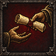
王怼怼 · 7 级三选一，11 级精通2 AP／10 疲劳／冷却 2 轮
一名其他队员近防+4、决心+6至其下次回合结束。临时近防取高。此分支不再承诺清除互斥分支“恐飞派”的自身惩罚。
11 级：基础疲劳消耗由 10 降至 9，行动点、冷却与次数不变。
 老蔡 · 7 级三选一，11 级精通
老蔡 · 7 级三选一，11 级精通4 AP／18 疲劳／冷却 3 轮
必须持盾，对自己和最多两名相邻可行动队员：近防+6、决心+6，至各自下次回合开始。选择后固定受益者，临时护卫近防取高。
11 级：基础疲劳消耗由 18 降至 16，行动点、冷却与次数不变。
 老蔡 · 7 级三选一，11 级精通
老蔡 · 7 级三选一，11 级精通被动，按条件生效
战斗第一轮开始时，自己与最多两名相邻可行动队员先攻+12；自己前两轮决心+5。第一轮先攻只作用一次，增援不补发。
11 级：自身每回合疲劳恢复额外 +1。
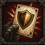
老蔡 · 7 级三选一，11 级精通被动，按条件生效
某敌人本轮被两名不同队员的单体武器命中后，自己下一次单体近战攻击它时命中+8，每轮一次，尝试即消耗。
11 级：自身每回合疲劳恢复额外 +1。
被动，按条件生效
本次行动尚未移动时，首次单体近战命中+5；尝试消耗，计入Mod命中+10总上限。无额外射程。
11 级：自身每回合疲劳恢复额外 +1。
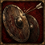
眼子 · 7 级三选一，11 级精通3 AP／14 疲劳／冷却 2 轮
必须持盾，为自己与一名相邻可行动队员提供远防+8，至各自下次回合开始；失盾立即结束。临时远防取最高，不获得近防。
11 级：基础疲劳消耗由 14 降至 12，行动点、冷却与次数不变。
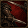
眼子 · 7 级三选一，11 级精通被动，按条件生效
每轮首次躲过敌方单体近战攻击后，本次或下一次自己行动的第一次单体近战命中+6，最迟下次回合结束清除。不会触发免费反击。
11 级：自身每回合疲劳恢复额外 +1。
 小虎 · 7 级三选一，11 级精通
小虎 · 7 级三选一，11 级精通3 AP／12 疲劳／冷却 2 轮
一名其他队员远防+10，下一次回合开始额外恢复4疲劳，至该回合结束。没有额外射击，不消耗弹药。
11 级：基础疲劳消耗由 12 降至 11，行动点、冷却与次数不变。
被动，按条件生效
本次行动实际普通移动至少一格后，首次单体远程命中+5，每轮一次；专属位移、换位不计。付移动AP后能否开弓须按原武器核算。
11 级：自身每回合疲劳恢复额外 +1。
被动，按条件生效
自身视野+1、前两轮先攻+10；不生成世界地图路线，不增加弹药、射程或夜视。
11 级：自身每回合疲劳恢复额外 +1。
3 AP／12 疲劳／冷却 2 轮
3格内可见人类/绿皮先攻-20、远攻-8至目标下次回合结束。免疫恐惧者、亡灵、野兽无效；同名取高，不能降低AP。
11 级：基础疲劳消耗由 12 降至 11，行动点、冷却与次数不变。
被动，按条件生效
本次行动尚未移动时单体远程命中+5，普通/技能/强制移动均使本次行动失效。与其他Mod命中加成合计≤10。
11 级：自身每回合疲劳恢复额外 +1。
被动，按条件生效
每轮首次单体远程落空后，下次单体远程命中+8，尝试后消耗，最迟下轮结束清零；不允许反复故意射空累积。
11 级：自身每回合疲劳恢复额外 +1。
3 AP／12 疲劳／冷却 2 轮
持盾给一名相邻队员近防+4、决心+4，至其下次回合结束；失盾或断开相邻立即结束。11级仅减少疲劳，不再额外把近防叠到+6。
11 级：基础疲劳消耗由 12 降至 11，行动点、冷却与次数不变。
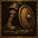
小胖 · 7 级三选一，11 级精通被动，按条件生效
按稳街舞的步点：持盾且与可行动队员相邻时，被攻击时近防 +4。
11 级：自身每回合疲劳恢复额外 +1。
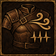
小胖 · 7 级三选一，11 级精通被动，按条件生效
每轮首次受到敌方直接武器攻击并存活后恢复3疲劳；零伤害命中也算一次，闪避与持续伤害不触发。
11 级：自身每回合疲劳恢复额外 +1。
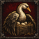
大鹅 · 7 级三选一，11 级精通3 AP／14 疲劳／冷却 2 轮
持盾守原位，自己与最多两名相邻队员远防+8，至大鹅下次回合开始。大鹅移动/失盾/无法行动，或队友不再相邻时失效。
11 级：基础疲劳消耗由 14 降至 12，行动点、冷却与次数不变。
 大鹅 · 7 级三选一，11 级精通
大鹅 · 7 级三选一，11 级精通被动，按条件生效
至少与一名敌人相邻，且相邻的其他可行动队员数不少于相邻敌人数时，决心 +5、近战武器命中 +5。
11 级：自身每回合疲劳恢复额外 +1。
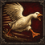
大鹅 · 7 级三选一，11 级精通4 AP／16 疲劳／冷却 2 轮
单手近战普通单体招式，命中-5、护甲伤害×1.30；不移动不击退、不额外攻击。血伤不提高，伤害沿用所持武器，不能模拟双手技能。
11 级：基础疲劳消耗由 16 降至 14，行动点、冷却与次数不变。
1 AP／8 疲劳／冷却 2 轮，每战至多 3 次
标记一个4格内可见敌人，下一次己方单体远程命中+8，尝试消耗，最多持续两轮；每战3次，每位施术者只保留一个。命中加成总上限+10，95%封顶仍有效。
11 级：基础疲劳消耗由 8 降至 7，行动点、冷却与次数不变。
被动，按条件生效
攻击与己方队员相邻的敌人时，每轮首次单体远程命中 +5。
11 级：自身每回合疲劳恢复额外 +1。
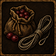
蔓越莓 · 7 级三选一，11 级精通被动，按条件生效
每轮首次单体远程命中与队员相邻的敌人后恢复3疲劳；一次攻击只结算一次，不按受击目标数倍增。
11 级：自身每回合疲劳恢复额外 +1。
3 AP／12 疲劳／冷却 2 轮
一名其他队员近防+3、决心+8至其下次回合结束。与其他护卫临时近防取高；不治疗不复活。
11 级：基础疲劳消耗由 12 降至 11，行动点、冷却与次数不变。
被动，按条件生效
与可行动队员相距≤2格时，自己决心+6、先攻+5。没有人数加成，不对队友传播。
11 级：自身每回合疲劳恢复额外 +1。
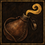
罗一可 · 7 级三选一，11 级精通被动，按条件生效
本次行动没有使用主动技能且没有相邻敌人，回合结束恢复6疲劳，每轮一次。不可同时获得主动攻击收益。
11 级：自身每回合疲劳恢复额外 +1。
3 AP／12 疲劳／冷却 2 轮
持盾保护一名相邻队员：近防+4、远防+8至其下次回合结束；可可须保持可行动、持盾且相邻。护卫近防取高。
11 级：基础疲劳消耗由 12 降至 11，行动点、冷却与次数不变。
被动，按条件生效
可可持盾，相邻队员躲过敌方单体武器攻击后，可可恢复4疲劳。每轮一次、每战最多20；队友越多不增加上限。
11 级：自身每回合疲劳恢复额外 +1。
 可可 · 7 级三选一，11 级精通
可可 · 7 级三选一，11 级精通被动，按条件生效
持盾保护自己人：与至少一名生命不超过一半的可行动队员相邻时，被攻击时近防 +4、决心 +6。现版不提供远程误伤减免。
11 级：自身每回合疲劳恢复额外 +1。
 余想 · 7 级三选一，11 级精通
余想 · 7 级三选一，11 级精通3 AP／16 疲劳／冷却 3 轮
至自己下次回合开始，近防/远防+8、先攻-10；期间首次受到敌方直接武器伤害恢复4疲劳。无相邻敌人时也可用，不产生额外回合。
11 级：基础疲劳消耗由 16 降至 14，行动点、冷却与次数不变。
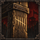
余想 · 7 级三选一，11 级精通被动，按条件生效
与至少两名可行动队员相邻时，被攻击时近防 +4，决心 +6。
11 级：自身每回合疲劳恢复额外 +1。
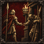
余想 · 7 级三选一，11 级精通被动，按条件生效
自己回合开始时若出现一名此前回合开始时不相邻的可行动队员，恢复4疲劳；首轮只记录。每轮一次，每战最多16，重复来回不突破上限。
11 级：自身每回合疲劳恢复额外 +1。
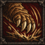
童猪 · 7 级三选一，11 级精通3 AP／12 疲劳／冷却 2 轮，每战至多 2 次
3格内人类/绿皮下一次单体武器命中-10，尝试消耗，至第二次目标回合结束到期。每战2次；免疫恐惧者不受影响。
11 级：基础疲劳消耗由 12 降至 11，行动点、冷却与次数不变。
 童猪 · 7 级三选一，11 级精通
童猪 · 7 级三选一，11 级精通被动，按条件生效
4 格内可见敌人连续两次使用同一武器技能时，获得一层看懂，每层使自身近战命中 +3；最多两层，每轮最多一层，战后清零。
11 级：自身每回合疲劳恢复额外 +1。
 童猪 · 7 级三选一，11 级精通
童猪 · 7 级三选一，11 级精通3 AP／10 疲劳／冷却 3 轮
选择2格内最多3名己方队员（含自己），各下一次单体武器少耗4疲劳，两次目标回合结束后到期；最低仍耗原消耗50%向上取整，同类优惠取高。
11 级：基础疲劳消耗由 10 降至 9，行动点、冷却与次数不变。
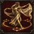
美伢 · 7 级三选一，11 级精通3 AP／20 疲劳／冷却 2 轮，每战至多 2 次
移到相邻同高可通行空格，免脱离攻击；落点最多两名相邻队员先攻+10至各自下次回合结束。定身不能用，每战2次。
11 级：基础疲劳消耗由 20 降至 17，行动点、冷却与次数不变。
 美伢 · 7 级三选一，11 级精通
美伢 · 7 级三选一，11 级精通被动，按条件生效
相邻队员单体近战落空时记住敌人；本轮下一次攻击该敌人近战命中 +6，每轮一次。
11 级：自身每回合疲劳恢复额外 +1。
3 AP／16 疲劳／冷却 2 轮，每战至多 2 次
本次行动已用单体近战命中过敌人后，撤至相邻同高空格，免脱离攻击。定身不能用，每战2次，不能返还AP或触发再攻击。
11 级：基础疲劳消耗由 16 降至 14，行动点、冷却与次数不变。
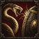
玩蛇 · 7 级三选一，11 级精通4 AP／14 疲劳／冷却 1 轮
单手近战普通单体招式，生命/护甲伤害×0.80；命中后目标近攻-6至其下次回合结束。每轮一次，不能加额外普攻，免疫限制沿用普通属性减益规则。
11 级：基础疲劳消耗由 14 降至 12，行动点、冷却与次数不变。
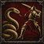
玩蛇 · 7 级三选一，11 级精通被动，按条件生效
每轮首次受到敌方单体近战攻击后记住攻击者；对它的下一次单体近战命中 +6，至自己下次回合结束失效。
11 级：自身每回合疲劳恢复额外 +1。
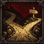
玩蛇 · 7 级三选一，11 级精通被动，按条件生效
每轮一次，普通单体近战命中后，为本次行动内下一次普通单体近战减免 4 疲劳；命中或落空都消耗优惠，不赠送攻击。
11 级：自身每回合疲劳恢复额外 +1。
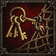
涂涂 · 7 级三选一，11 级精通3 AP／20 疲劳／冷却 3 轮，每战至多 2 次
与相邻同高且可行动队员交换位置，免脱离攻击；双方不能网缚/眩晕/不可移动/换位免疫。每战2次，不在空地留下增益。
11 级：基础疲劳消耗由 20 降至 17，行动点、冷却与次数不变。
 涂涂 · 7 级三选一，11 级精通
涂涂 · 7 级三选一，11 级精通被动，按条件生效
相邻可行动队员生命不超过一半时，决心 +10、被攻击时近防 +5。现版以掩护伤员体现断后，不监听撤退。
11 级：自身每回合疲劳恢复额外 +1。
被动，按条件生效
仅普通移动或等待且无相邻敌人，回合结束恢复8疲劳，每轮一次。无额外宿营免工资或免费世界地图恢复。
11 级：自身每回合疲劳恢复额外 +1。
 奶盖 · 7 级三选一，11 级精通
奶盖 · 7 级三选一，11 级精通4 AP／15 疲劳／冷却 2 轮，每战至多 2 次
嘲讽相邻且可合法近战攻击自己的普通人类，使用原版嘲讽AI优先级；每战2次。恐惧免疫者无效，不强制移动，不保证对方一定攻击。
11 级：基础疲劳消耗由 15 降至 13，行动点、冷却与次数不变。
4 AP／20 疲劳／冷却 2 轮
持盾，近防+8，直接武器生命伤害×0.80至自己下次回合开始；禁止主动移动/武器技能。失盾/被移动/无法行动即结束，持续伤害照常。
11 级：基础疲劳消耗由 20 降至 17，行动点、冷却与次数不变。
 奶盖 · 7 级三选一，11 级精通
奶盖 · 7 级三选一，11 级精通被动，按条件生效
每轮首次躲过敌方单体武器攻击，记一层返场；下一次投掷命中+8，尝试消耗，最迟下轮结束到期。不要求同时拥有缩进奶盖，三选一不会形成不可达联动。
11 级：自身每回合疲劳恢复额外 +1。
 小杰 · 7 级三选一，11 级精通
小杰 · 7 级三选一，11 级精通4 AP／14 疲劳／冷却 2 轮，每战至多 2 次
解除自己或相邻队员的一项普通网/加固网，每战2次；不能解除藤蔓、抓取、眩晕、伤势。必须先存在合法网，失败不收费。
11 级：基础疲劳消耗由 14 降至 12，行动点、冷却与次数不变。
 小杰 · 7 级三选一，11 级精通
小杰 · 7 级三选一，11 级精通被动，按条件生效
面对带恐惧／魅惑标签的士气检定，额外决心 +15；常规受伤、包围和同伴阵亡检定不加成。
11 级：自身每回合疲劳恢复额外 +1。
 小杰 · 7 级三选一，11 级精通
小杰 · 7 级三选一，11 级精通4 AP／18 疲劳／冷却 3 轮，每战至多 2 次
消耗2工具，命中检定为自身近攻+10对近防，成功使相邻可束缚人形敌人不能移动至目标下次回合结束；仍可攻击/施法。每战2次，无隐藏地雷，不影响束缚免疫者。
11 级：基础疲劳消耗由 18 降至 16，行动点、冷却与次数不变。
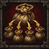
bula · 7 级三选一，11 级精通3 AP／10 疲劳／冷却 2 轮，每战至多 3 次
指定自己或3格内一名队员，下一次投掷少耗6疲劳，两次目标回合结束后到期；最低消耗原值50%向上取整。每战3次，不赠送弹药。
11 级：基础疲劳消耗由 10 降至 9，行动点、冷却与次数不变。
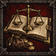
bula · 7 级三选一，11 级精通被动，按条件生效
本人在册存活，每日首次成功购买工具/药品/弹药优惠5%，最多30克朗；不加出售价格，不影响招募，不与同类购买优惠连乘。
11 级：自身每回合疲劳恢复额外 +1。
 bula · 7 级三选一，11 级精通
bula · 7 级三选一，11 级精通被动，按条件生效
投掷武器剩余≤2发时，普通投掷命中+6，每战最多3次；命中/落空均耗次数和弹药，切包不能重置。
11 级：自身每回合疲劳恢复额外 +1。
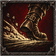
苏袜 · 7 级三选一，11 级精通3 AP／18 疲劳／冷却 2 轮，每战至多 2 次
移到相邻同高可通行空格，免脱离攻击，自身先攻+12至下次回合结束；每战2次。定身/不可移动时不能用。
11 级：基础疲劳消耗由 18 降至 16，行动点、冷却与次数不变。
 苏袜 · 7 级三选一，11 级精通
苏袜 · 7 级三选一，11 级精通被动，按条件生效
自己当前有效先攻高于目标时单体武器命中+5，每轮首次攻击有效。使用受装备/已积疲劳影响的先攻，相等无加成。
11 级：自身每回合疲劳恢复额外 +1。
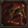
苏袜 · 7 级三选一，11 级精通3 AP／14 疲劳／冷却 2 轮
远防+12、近防+4至自己下次回合开始；禁止主动移动，仍能攻击，被迫移动即结束。
11 级：基础疲劳消耗由 14 降至 12，行动点、冷却与次数不变。
 千涵 · 7 级三选一，11 级精通
千涵 · 7 级三选一，11 级精通3 AP／20 疲劳／冷却 2 轮，每战至多 2 次
移到相邻同高可通行空格，免脱离攻击，本次行动下一次单体近战命中+8，尝试耗尽；每战2次。禁止返AP、追加攻击和跨高差。
11 级：基础疲劳消耗由 20 降至 17，行动点、冷却与次数不变。
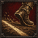
千涵 · 7 级三选一，11 级精通被动，按条件生效
每轮首次普通移动完成后恢复2疲劳，前4轮有效，每战最多8；技能位移/换位/推拉不计，不回AP。
11 级：自身每回合疲劳恢复额外 +1。
 千涵 · 7 级三选一，11 级精通
千涵 · 7 级三选一，11 级精通被动，按条件生效
本次行动仅普通移动或等待且结束时无相邻敌人，恢复8疲劳，每轮一次。归入全Mod每轮8点额外恢复上限。
11 级：自身每回合疲劳恢复额外 +1。
3 AP／16 疲劳／冷却 2 轮
持盾，近防+7，免疫推拉至自己下次回合开始；伤害/网缚/眩晕照常，失盾立即结束。
11 级：基础疲劳消耗由 16 降至 14，行动点、冷却与次数不变。
 王大芷 · 7 级三选一，11 级精通
王大芷 · 7 级三选一，11 级精通被动，按条件生效
自己持盾且本次行动未移动，相邻最多两名其他可行动隊员受攻击时近防+3；同类站位保护取高，不给自己。被移动后到下次回合才重置。
11 级：自身每回合疲劳恢复额外 +1。
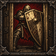
王大芷 · 7 级三选一，11 级精通被动，按条件生效
对与至少两名己方队员相邻的敌人，单体近战命中 +5，每轮一次。
11 级：自身每回合疲劳恢复额外 +1。
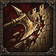
瑶瑶牙 · 7 级三选一，11 级精通6 AP／20 疲劳／冷却 3 轮，每战至多 2 次
每战2次，以当前双手近战武器的普通单体招式攻击，护甲伤害×1.35，不降低命中；沿用武器实际射程（长柄允许2格）与血伤。不附带击退、不触发握把追加破甲、不加免费攻击。属于破甲爆发，长战持续收益仍与“奶团吕布”竞争。
11 级：基础疲劳消耗由 20 降至 17，行动点、冷却与次数不变。
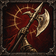
瑶瑶牙 · 7 级三选一，11 级精通被动，按条件生效
使用双手近战武器时，近战武器攻击的护甲伤害 +10%。包括双手斧、剑、锤和长柄；不赋予额外射程。
11 级：自身每回合疲劳恢复额外 +1。
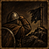
瑶瑶牙 · 7 级三选一，11 级精通被动，按条件生效
本次行动普通移动后，结束时距可行动队长≤3格，获得决心+8至下次自己回合开始；三队长只取一个来源。
11 级：自身每回合疲劳恢复额外 +1。
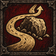
羊咩咩 · 7 级三选一，11 级精通3 AP／18 疲劳／冷却 2 轮，每战至多 2 次
撤到相邻同高可通行空格，免脱离攻击，每战2次；定身/不可移动不能用，不返还AP。与其他移动技共享每回合一次专属位移限制。
11 级：基础疲劳消耗由 18 降至 16，行动点、冷却与次数不变。
被动，按条件生效
每轮第二次普通移动完成后恢复 3 疲劳；不会返还行动点，专属位移不计入。
11 级：自身每回合疲劳恢复额外 +1。
 羊咩咩 · 7 级三选一，11 级精通
羊咩咩 · 7 级三选一，11 级精通被动，按条件生效
自己回合结束，为一名相邻可行动且疲劳最高的其他队员恢复3疲劳，每轮一次。相同疲劳按实体ID排序，不能选择自身或累加多份铃铛。
11 级：自身每回合疲劳恢复额外 +1。
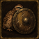
宋暖阳 · 7 级三选一，11 级精通3 AP／12 疲劳／冷却 2 轮
缩在掩体后：远防 +12、近防 +3，至自己下次回合开始；期间不能主动移动。
11 级：基础疲劳消耗由 12 降至 11，行动点、冷却与次数不变。
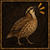
宋暖阳 · 7 级三选一，11 级精通被动，按条件生效
前两轮自身先攻+15、视野+1；后续失效，不向全队广播。
11 级：自身每回合疲劳恢复额外 +1。
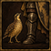
宋暖阳 · 7 级三选一，11 级精通被动，按条件生效
每轮首次攻击本轮已被其他队员单体武器命中的敌人时，命中 +5。
11 级：自身每回合疲劳恢复额外 +1。
4 AP／20 疲劳／冷却 2 轮
持盾，直接武器总伤害×0.80至自己下次回合开始；不能主动移动或使用武器技能。失盾/移动/无法行动即结束；不减流血、毒、灼烧。
11 级：基础疲劳消耗由 20 降至 17，行动点、冷却与次数不变。
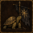
溺水小龟 · 7 级三选一，11 级精通被动，按条件生效
持盾且可行动阿飞在3格内，自身决心+8、每回合额外恢复2疲劳。阿飞在预备队/死亡/失去行动能力时无效，纳入额外恢复上限。
11 级：自身每回合疲劳恢复额外 +1。
3 AP／14 疲劳／冷却 2 轮
持盾保护相邻一名队员，近防/远防+5至其下次回合结束；须保持相邻、持盾、可行动，同类保护取高。
11 级：基础疲劳消耗由 14 降至 12，行动点、冷却与次数不变。